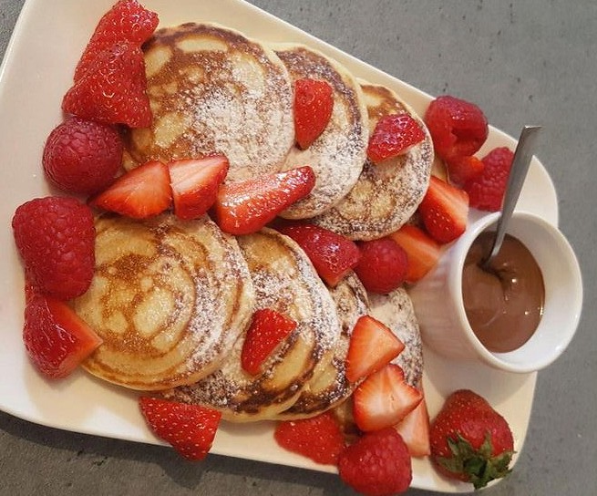

Hier findest du die süßen Rezeptideen deiner Mitstudierenden in alphabetischer Reihenfolge.
Klick einfach auf den gewünschten Buchstaben unten.
Viel Spaß beim Durchstöbern :)
P.S.: Falls du doch auf der falschen Seite gelandet bist, hier geht es zurück zur Startseite.
N P
N
Nutella Rolls
| Zutaten | Dauer | Zubereitung |
|---|---|---|
|
10-20 Minuten |
Zuerst die Ränder der Toastbrotscheiben entfernen. Diese dann mit einem Nudelholz platt rollen und mit Nutella bestreichen. Einrollen und mit dem Eigelb bestreichen. Danach in der Pfanne, mit etwas Öl, von allen Seiten goldbraun wenden. Als letztes in der Zucker-Zimt-Mischung rollen und genießen :) |
P
Pancakes

| Zutaten | Dauer | Zubereitung |
|---|---|---|
|
10-20 Minuten |
Zuerst alle trockenen Zutaten miteinander vermengen Danach die flüssigen Zutaten dazumischen. Etwas Öl in die Pfanne geben und kleine runde Teigportionen von beiden Seiten goldbraun anbraten. Zum Schluss mit Sirup und Früchten deiner Wahl toppen. Guten Appetit! |